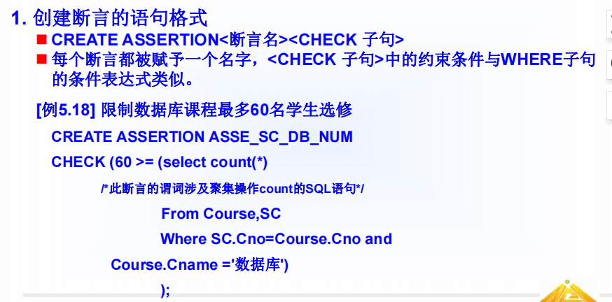
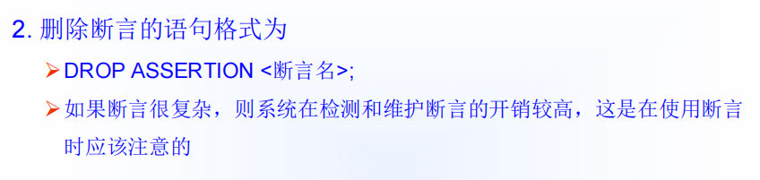
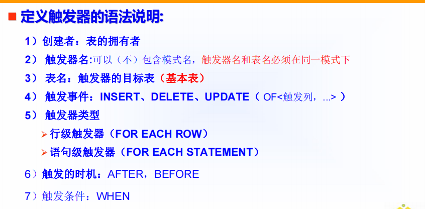
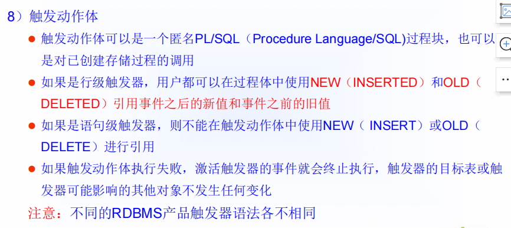

title: 数据库系统概述第五章
‘笔记’
‘’
‘笔记’
‘数据库系统概述’
第五章 数据库完整性
[TOC]
数据库的完整性指：数据的正确性和相容性
数据库管理系统必须实现如下功能
提供完整性约束条件的机制
提供完整性检查的方法
进行违约处理
5.1 实体完整性
实体完整性检查
5.2 参照完整性
1 2 3 4 5 6 7 8 9 10 11 12 13 # 关系SC中（Sno，Cno）是主码。Sno，Cno分别参照Student表的主码和Course表的主码 # 定义SC中的参照完整性 CREATE TABLE SC( Sno CHAR (9 ) NOT NULL , Cno CHAR (4 ) NOT NULL , Grade SMALLINT , PRIMARY KEY (Sno, Cno), FOREIGN KEY (Sno) REFERENCES Student(Sno),FOREIGN KEY (Cno) REFERENCES Course(Cno));
一般地，当对参照表和被参照表的操作违反了参照完整性，系统选用默认策略，即拒绝执行。如果想让系统采用其他的策略则必须在创建表的时候显式地加以说明。
1 2 3 4 5 6 7 8 9 10 11 12 13 14 15 # 显式说明参照完整性的违约处理示例 CREATE TABLE SC( Sno CHAR (9 ) NOT NULL ， Cno CHAR (4 ) NOT NULL ， Grade SMALLINT , PRIMARY KEY(Sno,Cno)，FOREIGN KEY (Sno) REFERENCES Student(Sno)ON DELETE CASCADE ON UPDATE CASCADE, FOREIGN KEY (Cno) REFERENCES Course(Cno)ON DELETE NO ACTIONON UPDATE CASCADE)
5.3 用户定义的完整性
属性上的约束条件
1 2 3 4 5 6 7 8 9 10 11 12 13 14 15 16 17 18 19 20 21 22 23 24 25 26 27 28 # 1 不允许取空值 CREATE TABLE SC( Sno CHAR (9 ) NOT NULL , Cno CHAR (4 ) NOT NULL , Grade SMALLINT NOT NULL , PRIMARY KEY (Sno, Cno), …); # 2 列值唯一 CREATE TABLE DEPT( Deptno NUMERIC (2 ), Dname CHAR (9 ) UNIQUE NOT NULL ， Location CHAR (10 ), PRIMARY KEY (Deptno)); # 3 用CHECK 短语指定列值应该满足的条件 CREATE TABLE Student( Sno CHAR (9 ) PRIMARY KEY, Sname CHAR (8 ) NOT NULL , Ssex CHAR (2 ) CHECK （Ssex IN （‘男’,’女’））， Sage SMALLINT , Sdept CHAR (20 ) );
元组上的约束条件
1 2 3 4 5 6 7 8 9 10 11 # 当学生的性别是男时，其名字不能以Ms.打头。 CREATE TABLE Student( Sno CHAR (9 ), Sname CHAR (8 ) NOT NULL ， Ssex CHAR (2 ), Sage SMALLINT , Sdept CHAR (20 ), PRIMARY KEY (Sno),CHECK (Ssex= '女' OR Sname NOT LIKE 'Ms.%' ));
5.4 完整性约束命名子句
完整性约束命名子句
1 2 3 4 5 6 7 8 9 10 11 12 13 14 15 16 17 18 19 20 CONSTRAINT < 完整性约束条件名> < 完整性约束条件> 或 CONSTRAINT < 完整性约束条件名> ［PRIMARY KEY短语 | FOREIGN KEY短语 | CHECK 短语| NOT NULL | UNIQUE ］；# 建立学生登记表Student，要求学号在90000 ~ 99999 之间，姓名不能取空值，年龄小于30 ，性别只能是“男”或“女”。 CREATE TABLE Student( Sno NUMERIC (6 ) CONSTRAINT C1 CHECK (Sno BETWEEN 90000 AND 99999 ),Sname CHAR (20 ) CONSTRAINT C2 NOT NULL ,Sage NUMERIC (3 ) CONSTRAINT C3 CHECK (Sage < 30 ),Ssex CHAR (2 ) CONSTRAINT C4 CHECK (Ssex IN ( ‘男’,'女' )),CONSTRAINT StudentKey PRIMARY KEY(Sno)); # 在Student表上建立了5 个约束条件，包括主码约束（命名为StudentKey）以及C1、C2、C3、C4四个列级约束。
修改表中的完整性限制
1 2 3 4 5 6 7 8 9 10 11 12 13 14 15 #Student表中对性别的限制。 ALTER TABLE StudentDROP CONSTRAINT C4;# C4 表示约束命名子句的名称 # 修改表Student中的约束条件，要求学号改为在900000 ~ 999999 之间，年龄由小于30 改为小于40 # 可以先删除原来的约束条件，再增加新的约束条件 ALTER TABLE StudentDROP CONSTRAINT C1;ALTER TABLE StudentADD CONSTRAINT C1 CHECK (Sno BETWEEN 900000 AND 999999 ),ALTER TABLE StudentDROP CONSTRAINT C3;ALTER TABLE StudentADD CONSTRAINT C3 CHECK (Sage < 40 );
*5.5 域中的完整性限制
*5.6 断言


5.7 触发器
定义触发器
1 2 3 4 5 CREATE TRIGGER < 触发器名> {BEFORE | AFTER} < 触发事件> ON < 表名> REFERENCING NEW | OLD ROW AS < 变量> FOR EACH {ROW | STATEMENT}[WHEN < 触发条件> ]< 触发动作体>


1 2 3 4 5 6 7 8 9 10 11 12 13 14 15 16 17 18 19 20 21 22 23 # 当对表SC的Grade属性进行修改时，若分数增加了10 % 则将此次操作记录到下面表中： # SC_U（Sno,Cno,Oldgrade,Newgrade） # 其中Oldgrade是修改前的分数，Newgrade是修改后的分数。 CREATE TRIGGER SC_TAFTER UPDATE OF Grade ON SC REFERENCING OLD row AS OldTuple,NEW row AS NewTupleFOR EACH ROW WHEN (NewTuple.Grade >= 1.1 * OldTuple.Grade)INSERT INTO SC_U(Sno,Cno,OldGrade,NewGrade)VALUES (OldTuple.Sno,OldTuple.Cno,OldTuple.Grade,NewTuple.Grade)# 将每次对表Student的插入操作所增加的学生个数记录到表StudentInsertLog中。 CREATE TRIGGER Student_CountAFTER INSERT ON Student REFERENCING NEW TABLE AS DELTAFOR EACH STATEMENTINSERT INTO StudentInsertLog (Numbers)SELECT COUNT (* ) FROM DELTA
1 2 3 4 5 6 7 8 9 10 # 定义一个BEFORE行级触发器，为教师表Teacher定义完整性规则“教授的工资不得低于4000 元，如果低于4000 元，自动改为4000 元”。 CREATE TRIGGER Insert_Or_Update_SalBEFORE INSERT OR UPDATE ON Teacher FOR EACH ROW BEGIN IF (new.Job= '教授' ) AND (new.Sal < 4000 ) THEN new.Sal := 4000 ; END IF; END ;
删除触发器
1 DROP TRIGGER < 触发器名> ON < 表名> ;